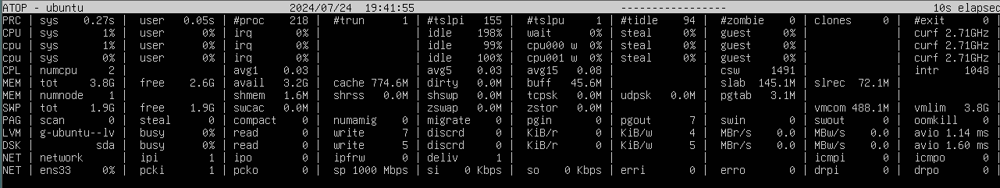

Диагностика железа на Linux системах¶
Диагностика с помощью top¶
Общая информация¶
top - утилита Linux которая используется для отображения системной информации о процессах, работающих в данный момент. Так же можно посмотреть загрузку процессора, памяти и других системных ресурсов.
Некоторые важные команды:
q- выход;<или>- выбирает параметр по которому будет осуществляться сортировка;P- сортирует процессы по использованию процессора;M- сортирует процессы по использованию памяти;u- оставляет процессы только для определенного пользователя;k- убивает выбранный процесс;A- переход в "многооконный" режим;m- изменяет тип отображения оперативной памяти (внешний вид);1- изменяет тип отображения CPU каждый процессор отдельно или все вместе;t- изменяет тип отображения CPU (внешний вид);a- перемещение по окнам;z- "окрашивает" интерфейс;Z- включает режим настройки "окрашивания";x- выделяет по какому параметру отсортированы процессы;W- сохраняет настроенную конфигурацию в файл~/.toprcили~/config/procpc/.toprc;h- выводит справку по командам.
Сведения о процессах:
PID- идентификатор процесса;USER- пользователь, запустивший процесс;PR- приоритет процесса;NI- измененный приоритет (присвоенный пользователем с помощью команды nice);VIRT- объем используемой виртуальной памяти (здесь выводится тот объем памяти, который был запрошен процессом, даже если фактически используется меньше);RES- объем используемой оперативной памяти (в данном случае, если процесс запросил 50Мб памяти, а использует 10Мб, будет выведено 10Мб);SHR- объем памяти, разделяемой с другими процессами (т.е. память, которая может быть использована другими процессами);S- статус процесса;%CPU- процент использования процессорного времени;%MEM- процент использования оперативной памяти;TIME- общее время работы процесса;COMMAND- имя процесса (команда, которой был запущен процесс).
Показатели CPU¶
Справочная информация
У CPU могут быть следующие основные состояния:
- idle (простой процессора), когда ничего не происходит;
- запуск процессов в userspace (пространство пользователя - программы и пр.);
- запуск процессов в kernelspace (пространство ядра - процессы, запуск которых инициирован ядром).
Дополнительно эти три состояния могут быть разделены по приоритету, так называемый nice. По умолчанию, все процессы запущенны с равным приоритетом 0. Nice принимает значения от -20 до 19.
Разбор показателей CPU top
%Cpu(s): 0,3 us, 0,3 sy, 0,0 ni, 99,3 id, 0,0 wa, 0,0 hi, 0,0 si, 0,0 st
0,3 us- информирует о том, что CPU тратит всего 0,3% своего времени на выполнение процессов в userspace. Это может быть любой процесс, которые не принадлежит ядру и выполняется в пользовательском пространстве (веб-сервер, БД, компилятор и т.д.). Обычно на нагруженном сервере большую часть занимает именно данный показатель.0,3 sy- это количество времени (в процентах), которое процессор потратил на запуск ядра. Все процессы и системные ресурсы обрабатываются ядром. Когда процессу пользовательского пространства нужно что-то из системы (выделить память, выполнить операции ввода-вывода, создать дочерний процесс и т.д.), то в игру вступает ядро. Данный показатель должен быть как можно меньше при штатной работе сервера.0,0 ni- данный показатель выводит данные процессов, которые использовали процессорное время и приоритет которых был изменен с помощью nice. В данном случае все по нулям, т.к. никаким процессам доп.приоритет не выдавался.99,3 id- idle time, о котором говорилось выше, 99,3% времени CPU простаивал.0,0 wa- статистика по операциям ввода-вывода, такие как чтение или запись на диск.
Есть моменты, когда CPU запускает такие операции и ему приходится ждать их завершения, т.к. скорость работы дисковых накопителей намного меньше, чем скорость работы CPU.
0,0 hi & 0,0 si- эти две статистики показывают, сколько времени (в процентах) процессор потратил на обслуживание прерываний.hi- аппаратные, отправляемые к CPU с различных периферийных устройств, например, с дисков или сетевых интерфейсов.si- программные, которые происходят на уровне ядра.0,0 st- относится только к виртуальным машинам (ВМ). Когда Linux запущен как ВМ на гипервизоре,stпоказывает сколько времени его vCPU провел в ожидании обслуживания гипервизором другого vCPU, работающего на другой ВМ. Поскольку обычно эти виртуальные процессоры совместно используют один и тот же физический процессор (или процессоры), то будут моменты, когда виртуальная машина хотела выполнить какое-либо действие, но гипервизор вместо этого назначал ресурсы CPU другой виртуальной машине.
Диагностика с помощью atop¶
atop - это утилита для мониторинга системных ресурсов в Linux. Более продвинутый аналог top, основным отличием является функция ведения логов, благодаря чему, есть возможность отслеживать работу процессов за прошедшие дни.
Утилита способна отображать конфиденциальную информацию о системе, которую можно получить с помощью sudo.
При запуске, экран разделен на две панели, сверху - накопленная статистика использования ресурсов системы, снизу - информация для каждого процесса.
Накопленная статистика использования ресурсов системы 
PRC- процессыCPU- нагрузка CPUcpu- нагрузка CPU для каждого ядраCPL- нагрузка процессораMEM- использование оперативной памятиSWP- подкачка оперативной памятиDSK- использование дискаNET- сетевая статистика
Общий вывод команды:
PID- идентификатор процессаSYSCPU- количество процессорного времени, затраченного при обработке системных задачUSRCPU- количество процессорного времени, затраченного в режиме пользователяVGROW- объем виртуальной памяти, занятой процессом с момента последнего обновления значенийRGROW- объем физической памяти, занятой процессом с момента последнего обновления значенийRDDSK- размер переданных данных при чтении с дискаWRDSK- размер переданных данных при записи на дискRUID- реальный идентификатор пользователя, от имени которого выполняется процессEUID- эффективный идентификатор пользователя, под которым выполняется процессST- текущий статус процессаEXC- код завершения после окончания процессаTHR- количество потоков внутри процессаS- текущий статус основного потока процессаCPU- процент использования CPU всеми процессамиCMD- название процесса
Вывод использования памяти:
PID— идентификатор процессаTID— идентификатор потокаMINFLT— количество мелких ошибок страниц, которые исправлены путем доступа к данным из свободных страницMAJFLT— количество крупных ошибок страниц, которые были устранены путем извлечения данных с дискаVSTEXT— объем виртуальной памяти, занимаемой текстом процессаVSLIBS— объем виртуальной памяти, занимаемой общими библиотеками процессаVDATA— объем виртуальной памяти, занимаемой приватными данными процессаVSTACK— объем виртуальной памяти, занимаемой приватным стеком процессаVSIZE— общий объем виртуальной памяти процессаRSIZE— общий объем резидентной памяти, занимаемой процессомMEM— процент использования RAM процессом
Дополнительные варианты запуска atop¶
- Записывать информацию в файл каждые 5 секунд
atop -w atop_log 5
- Прочитать информацию из файла
atop -r atop_log
Перемещение между снимками осуществляется с помощью следующих клавиш:
t- следующий снимок;T- предыдущий снимок.
- После записи так же можно использовать
atopsar, для анализа полученных логов
atopsar -r atop_log
- Вывод информации по логу за сегодня
atop -r
- Посмотреть информацию по логу за конкретный день
atop -r /var/log/atop/atop_20241231
Чтобы регулярно велись логи, необходимо добавить процесс в автозагрузку с помощью
systemctl.
- Вывод базового набора информации (по умолчанию)
atop -g
- Вывод информации по использованию памяти
atop -m
- Вывод информации по дискам
atop -d
- Вывод информации по сети
atop -n
- Поиск запущенных в фоновом режиме команд
atop -c
Все эти режимы можно включить из основного режима, просто нажав соответствующую клавишу.
Дополнительные утилиты для диагностики¶
fio (Flexible I/O Tester) - это утилита для тестирования производительности ввода/вывода (I/O) на Linux. Она позволяет создавать различные тестовые сценарии для оценки производительности дисков, файловых систем и других устройств хранения данных.
fio --name=lineread --ioengine=libaio --rw=read --direct=1 --size=1G --directory=/tmp/fio/
где:
name- название тестаioengine- библиотека для тестирования (наилучшая libaio)rw- тип операции ввода-вывода (read - линейное чтение, write - линейная запись, randread - случайное чтение, randwrite - случайная запись, readwrite)direct- не использовать буферизациюsize- размер файлаdirectory- папка для тестов (необходимо сначала создать)
stress - это утилита для Linux, которая используется для создания нагрузки на систему с целью тестирования ее стабильности и производительности. Она позволяет имитировать высокую загрузку CPU, памяти, дисков и сети, чтобы проверить, как система будет вести себя в условиях экстремальной нагрузки.
# Тестиуем CPU (добавляем процессы)
stress -c 13
# Тестируем ввод/вывод
stress -i 4
# Тестируем оперативную память
stress -m 10
# Тестируем диск
stress -d 1 --hdd-bytes 3G
# Комбинируем разные опции и ставим таймаут
stress -c 20 -d 1 -t 60
iperf3 - это утилита для тестирования пропускной способности сети в Linux. Она позволяет измерять скорость передачи данных между двумя узлами в сети, что полезно для оценки производительности сети, выявления узких мест и оптимизации настроек сетевого оборудования.
Load Average в Linux¶
В Linux средние нагрузки (Load Average) - это "средние значения нагрузки на систему". Они измеряют количество выполняемых потоков и ожидающих своей очереди (процессор, диск, непрерываемые блокировки). Иными словами, эта метрика отражает количество потоков, которые не простаивают полностью. Преимущество: учитывается потребность в разных ресурсах. В других ОС средние нагрузки - это "средние значения нагрузки на процессор". Они измеряют количество потоков, выполняемых и готовых к выполнению в процессоре. Преимущество: проще в понимании и обосновании (только для процессоров).
Это мера нагрузки, которая может превышать обрабатываемую системой в данный момент. Большинство инструментов показывает три средних значения: для 1, 5 и 15 минут. Load average измеряется в безразмерных единицах. Например, значение 1.00 означает полную загрузку одного процессора, а значение 2.00 - полную загрузку двух процессоров.
load avearage: 25.25, 23.40, 23.46
Некоторые триггеры:
- если значения равны 0.0, то система в состоянии простоя
- если среднее значение для 1 минуты выше, чем для 5 или 15, то нагрузка растет
- если среднее значение для 1 минуты ниже, чем для 5 или 15, то нагрузка снижается
- если значения нагрузки выше, чем количество процессоров, то могут быть проблемы с производительностью (в зависимости от ситуации)
IOPS в Linux¶
IOPS (Input/Output Operations Per Second) – один из ключевых параметров при измерении производительности систем хранения данных, жестких дисков, твердотельных дисков и сетевых хранилищ данных. По сути, IOPS это количество блоков, которое успевает считаться или записаться на носитель.
Основными измеряемыми величинами являются операции линейного (последовательного) и произвольного (случайного) доступа.
Под линейными операциям чтения/записи, при которых части файлов считываются последовательно, одна за другой, подразумевается передача больших файлов (более 128 К). При произвольных операциях данные читаются случайно из разных областей носителя, обычно они ассоциируются с размером блока 4 Кбайт.
Приблизительные значения IOPS для жестких дисков
| Устройство | Тип | IOPS | Интерфейс |
|---|---|---|---|
| 7,200 об/мин SATA-диски | HDD | ~75-100 IOPS | SATA 3 Гбит/с |
| 10,000 об/мин SATA-диски | HDD | ~125-150 IOPS | SATA 3 Гбит/с |
| 10,000 об/мин SAS-диски | HDD | ~140 IOPS | SAS |
| 15,000 об/мин SAS-диски | HDD | ~175-210 IOPS | SAS |
Приблизительные значения IOPS для SSD
| Устройство | Тип | IOPS | Интерфейс |
|---|---|---|---|
| Intel X25-M G2 MLC | SSD | ~8 600 IOPS | SATA 3 Гбит/с |
| OCZ Vertex 3 | SSD | ~60 000 IOPS (Произвольная запись 4K) | SATA 6 Гбит/с |
| OCZ RevoDrive 3 X2 | SSD | ~200 000 IOPS (Произвольная запись 4K) | PCIe |
| OCZ Z-Drive R4 CloudServ | SSD | ~1 400 000 IOPS | PCIe |